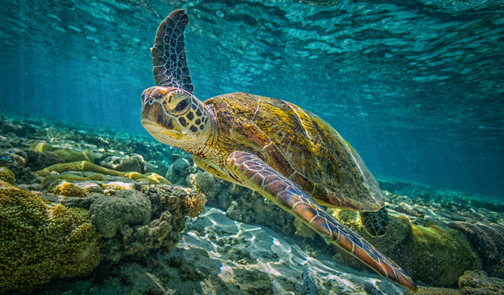
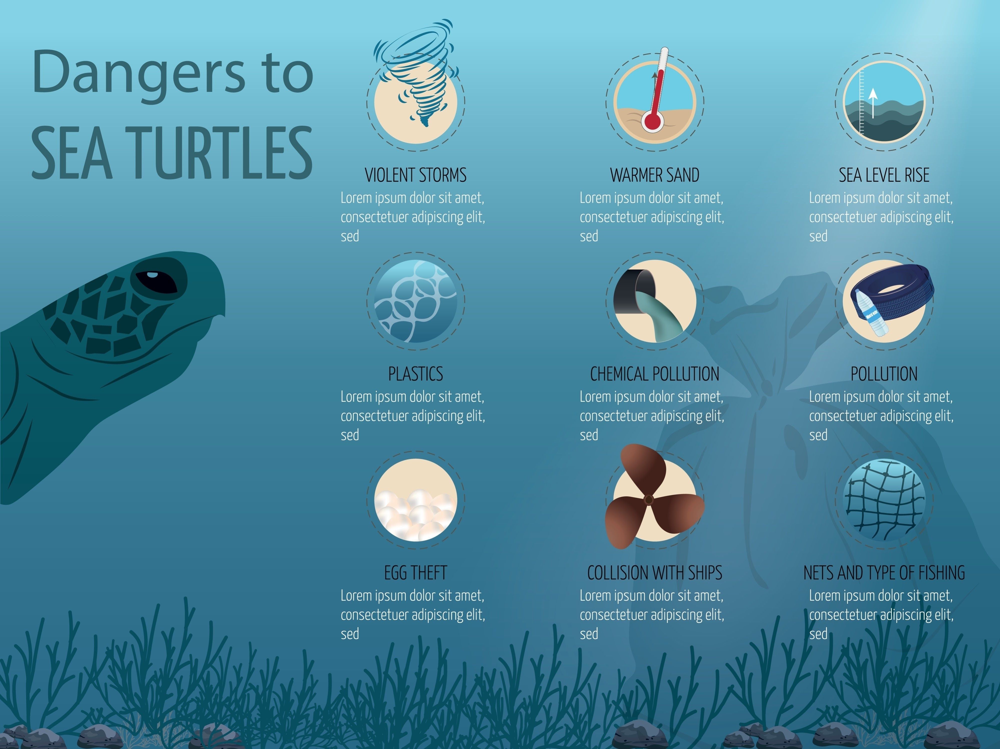

<!DOCTYPE html>
<html lang="hu">
<head>
    <meta charset="UTF-8">
    <meta name="viewport" content="width=device-width, initial-scale=1.0">
    <link href="https://cdn.jsdelivr.net/npm/bootstrap@5.3.8/dist/css/bootstrap.min.css" rel="stylesheet" integrity="sha384-sRIl4kxILFvY47J16cr9ZwB07vP4J8+LH7qKQnuqkuIAvNWLzeN8tE5YBujZqJLB" crossorigin="anonymous">
    <link rel="stylesheet" href="style.css">
    <title>Tengeriteknős-félék</title>
</head>
<body>
    
</body>
</html>
    <meta name="viewport" content="width=device-width, initial-scale=1.0">
</head>
<body>
    <header>
        <nav class="navbar navbar-expand-lg bg-body-tertiary">
  <div class="container">
    <a class="navbar-brand" href="#"></a>
    <button class="navbar-toggler" type="button" data-bs-toggle="collapse" data-bs-target="#navbarSupportedContent" aria-controls="navbarSupportedContent" aria-expanded="false" aria-label="Toggle navigation">
      <span class="navbar-toggler-icon"></span>
    </button>
    <div class="collapse navbar-collapse" id="navbarSupportedContent">
      <ul class="navbar-nav me-auto mb-2 mb-lg-0">
        <li class="nav-item">
          <a class="nav-link active" aria-current="page" href="#">Védelme Lépései</a>
        </li>
        <li class="nav-item">
          <a class="nav-link active" aria-current="page" href="#">Veszélyek</a>
        </li>
        <li class="nav-item">
          <a class="nav-link active" aria-current="page" href="#">Fajok</a>
        </li>
      </ul>
    </div>
  </div>
</nav>


    </header>
    <div class="tartalom">
    <main>
        <h1>Tengeriteknős-félék</h1>
        <div>
            
        </div>
       <p>A tengeri teknősök (Chelonioidea) a hüllők osztályába tartozó ősrégi állatok, amelyek már több mint 100 millió éve, a dinoszauruszok korában is éltek a Földön. Jelenleg hét fajuk ismert, melyek mindegyike a trópusi és szubtrópusi óceánok lakója. A szárazföldi rokonaikhoz képest testük áramvonalasabb és laposabb, a végtagjaik pedig evezőszerű úszókká módosultak, ami kiváló úszóképességet biztosít számukra. Ez a testfelépítés viszont azt eredményezi, hogy a fejüket és végtagjaikat nem tudják teljes mértékben behúzni a páncéljuk alá. A tengeri teknősök a nyílt óceánokban és a part menti vizekben, tengeri fűmezőkön, illetve korallzátonyok közelében élnek, és gyakran tesznek meg hatalmas távolságokat a táplálkozó- és fészkelőhelyeik között.</p>
        
        <p> A tengeri teknősök életük nagy részét a tengerben töltik, csak a tojásrakás idejére térnek a szárazföldre a nőstények. Hihetetlen módon, a nőstények rendszerint pontosan arra a tengerpartra térnek vissza tojást rakni, ahol ők maguk is kikeltek, ami egy több ezer kilométeres utazás eredménye is lehet. A tojásokat a homokba ássák, általában április és október között. A tojások kikelése után a fiatal teknősök azonnal a tenger felé veszik az irányt, de a következő éveikről (az ún. "elveszett évekről") még sok a feltáratlan információ. A teknősök hosszú életűek (akár 50-100 évig is élhetnek) és lassan növekednek, viszonylag későn érik el az ivarérettséget, ami a faj sebezhetőségét növeli. Étrendjük fajtól függően változó: egyesek főként tengeri füvet és algákat fogyasztanak, mások húsevők, mint például a medúzákkal táplálkozó kérgesteknősök.</p>

        <p><b><i>Sajnos a tengeri teknősök mind a hét faja veszélyeztetett vagy kritikusan veszélyeztetett státuszban van. </i></b>Populációjuk csökkenésének fő oka az emberi tevékenység. Ez magában foglalja a fészkelőhelyek elvesztését a part menti fejlesztések miatt, a tojásgyűjtést, az illegális vadászatot a húsuk, bőrük és páncéljuk miatt, valamint a halászatot, ahol véletlenül kerülnek a hálókba és megfulladnak. Különösen nagy problémát jelent az óceánok műanyag-szennyezése. A teknősök gyakran összetévesztik a műanyag zacskókat a medúzákkal, ami bélrendszeri elzáródást és éhezést okoz. A klímaváltozás hatására melegedő homok hőmérséklete befolyásolhatja a kikelő utódok nemét is (a melegebb hőmérséklet több nőstényt eredményez), ami felboríthatja az ivararányt. Ezért a tengeri teknősök védelme kiemelt fontosságú természetvédelmi feladat.</p>

       <h2>A tengeri teknősök védelmének 5 kulcslépése</h2>

        <ol>
            <li>       Csökkentsd a műanyag-felhasználást: Kerüld az egyszer használatos műanyagokat, hogy megakadályozd a tengeri szemét óceánokba jutását, ami végzetes lehet a teknősök számára.</li>
            <li>Ne zavard meg a fészkeket: A tojásrakás idején tartsd tiszteletben a tengerparti fészkelőhelyeket, és ne zavard meg a tojásrakó nőstényeket vagy a kikelt fiókákat.</li>
            <li>Támogass természetvédelmi szervezeteket: Adományokkal vagy önkéntes munkával segítsd azokat a helyi és nemzetközi szervezeteket, amelyek teknősvédelmi programokat működtetnek.</li>
            <li>Figyelj a felelős turizmusra: Ha olyan helyre utazol, ahol teknősök élnek, válassz etikus és fenntartható túrákat, amelyek nem veszélyeztetik az állatokat.</li>
            <li>Ne vásárolj teknőspáncélból készült termékeket: A törvény tiltja a legtöbb teknősfaj páncéljának kereskedelmét, de a kereslet csökkentésével hozzájárulhatsz az illegális orvvadászat felszámolásához.</li>
        </ol>


<h2>Fő veszélyek: Halászat és környezetszennyezés</h2>

<figure>
    
    <figcaption>Tengeri Teknős</figcaption>
</figure>

<p><a href="https://hu.wikipedia.org/wiki/Tengeri_tekn%C5%91s%C3%B6k" target="_blank">A tengeri teknősök </a>populációjának csökkenését elsősorban a halászati tevékenységek és a környezetszennyezés okozzák. A teknősök gyakran esnek áldozatul a kereskedelmi halászatnak, amikor véletlenül belegabalyodnak a vonóhálókba, hosszú zsinóros horgászeszközökbe vagy kopoltyúhálókba. Ezek az állatok levegőt vesznek, így a hálóba kerülés gyors fulladáshoz vezet. Ezt nevezzük járulékos fogásnak.</p>

<p>A másik nagy probléma a tengeri hulladék, különösen a műanyag. A lebegő műanyag zacskókat a teknősök tévedésből medúzáknak nézik, és elfogyasztják. Ez elzárja az emésztőrendszerüket, ami éhezést és lassú halált okoz. Ezenkívül az elhagyott halászhálók (szellemhálók) is hosszú éveken át fogságban tarthatják és megölhetik őket.</p>

<h2>Főbb fajok</h2>
<table>
    <caption>Fajták megnevezése</caption>
    <tr>
        <th>Fajok megnevezése</th>
        <th>Főbb tápláléka</th>
        <th>Védelmi státusza (IUCN)</th>
    </tr>
    <tr>
        <th>Kérgesteknős (Dermochelys coriacea)</th>
        <th>Medúzák</th>
        <th>Sebezhető (Vulnerable)</th>
    </tr>
    <tr>
        <th>Levesteknős (Chelonia mydas)</th>
        <th>Tengeri fű, Algák</th>
        <th>Veszélyeztetett (Endangered)</th>
    </tr>
    <tr>
        <th>Cserepes teknős (Eretmochelys imbricata)</th>
        <th>Tengeri szivacsok</th>
        <th>Kritikusan Veszélyeztetett (Critically Endangered)</th>
    </tr>
</table>
</main>
<footer>
    Készitette: Masa Barnabás Zsolt
</footer>
</div>

<script src="https://cdn.jsdelivr.net/npm/bootstrap@5.3.8/dist/js/bootstrap.bundle.min.js" integrity="sha384-FKyoEForCGlyvwx9Hj09JcYn3nv7wiPVlz7YYwJrWVcXK/BmnVDxM+D2scQbITxI" crossorigin="anonymous"></script>   
</body>
</html>